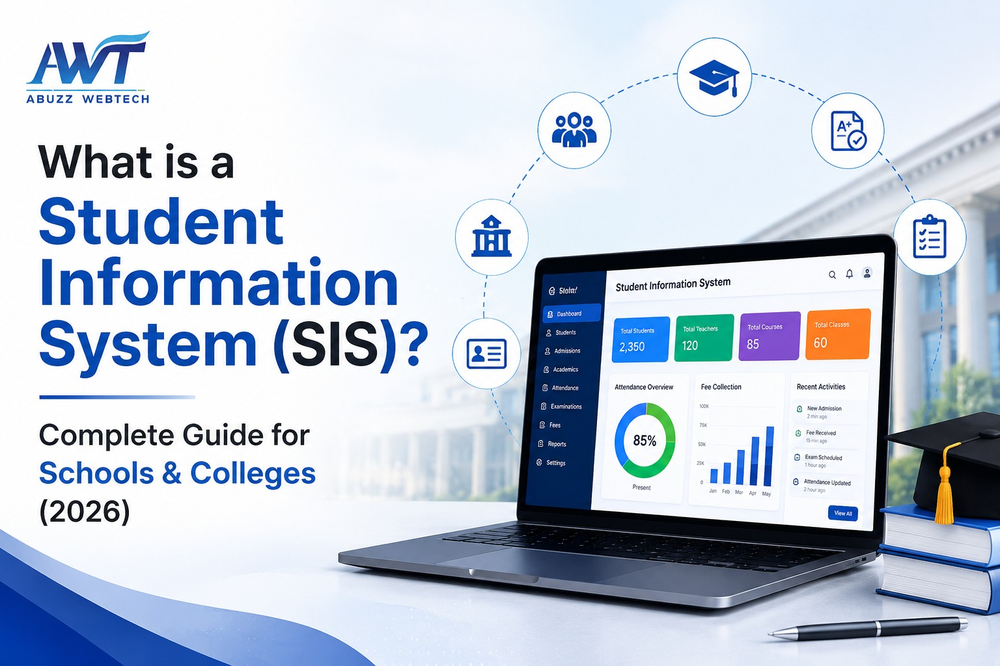

13 July 2026
What is a Learning Management System (LMS)? Features, Applications & Benefits
Education is becoming more digital every year. Schools, colleges, universities, coaching institutes, and businesses are moving beyond traditional classrooms to provide learning that is flexible, accessible, and easy to manage.
A Learning Management System (LMS) helps make this possible. It allows educators and trainers to create courses, share learning materials, conduct online assessments, monitor learner progress, and communicate with students from a single platform.
Whether you're a school administrator, teacher, corporate trainer, or business owner, understanding how LMS software works can help you deliver better learning experiences while saving time and improving efficiency.
In this guide, you'll learn what a Learning Management System (LMS) is, how it works, its key features, applications, benefits, and how to choose the right LMS for your organization.
What is a Learning Management System (LMS)?
A Learning Management System (LMS) is a software application designed to create, manage, deliver, and track learning programs online. It brings learners, educators, and administrators together on one digital platform, making the learning process more organized and efficient.
Instead of managing classes through multiple tools, an LMS provides everything in one place from course creation and study materials to assignments, quizzes, progress tracking, and reports.
Today, Learning Management System software is widely used by schools, colleges, universities, coaching institutes, corporate organizations, healthcare institutions, and training providers to simplify learning management.
What Does a Learning Management System Do?
A modern Learning Management System helps automate and simplify everyday learning activities.
It allows institutions and organizations to:
- Create and manage online courses
- Upload notes, videos, PDFs, and study materials
- Conduct online quizzes and examinations
- Assign homework and projects
- Track learner progress and completion rates
- Generate performance reports
- Share certificates after course completion
- Communicate with learners through announcements and notifications
These features help improve the learning experience while reducing manual work for teachers and administrators.
Why is Learning Management System Important?
Traditional learning methods often involve manual paperwork, physical classrooms, and scattered learning resources. Managing all these activities can become time-consuming as the number of learners grows.
A Learning Management System (LMS) solves these challenges by bringing learning resources, assessments, communication, and progress tracking into one secure platform.
Some of the key reasons organizations choose LMS software include:
- Easy access to learning from anywhere
- Better collaboration between learners and instructors
- Centralized course management
- Faster assignment and assessment process
- Real-time progress tracking
- Reduced paperwork
- Secure storage of learning data
- Improved learner engagement
- Time-saving automation
- Better reporting and analytics
Where is a Learning Management System Used?
A Learning Management System is suitable for many industries and educational environments.
| Industry | Common Use |
|---|---|
| Schools | Digital classrooms, assignments, exams, attendance |
| Colleges | Course management, online learning, assessments |
| Universities | Distance education, academic programs, certification |
| Coaching Institutes | Test preparation, online classes, study materials |
| Corporate Companies | Employee onboarding, compliance training, skill development |
| Healthcare | Medical staff training and certification |
| Government Organizations | Employee training and development programs |
How Does a Learning Management System (LMS) Work?
A Learning Management System (LMS) works as a centralized platform where administrators, teachers, trainers, and learners can manage the complete learning process online.
Administrators create user accounts and assign roles, while instructors upload learning content such as videos, notes, presentations, quizzes, and assignments. Learners can log in anytime to access courses, complete activities, and monitor their progress.
The system automatically tracks learning activities, records scores, and generates reports, making course management faster and more organized.
How an LMS Works – Step by Step
- Administrator creates user accounts and assigns roles.
- Teachers or trainers create courses and upload learning materials.
- Learners log in and enroll in assigned courses.
- Learners watch videos, read notes, and complete assignments.
- Online quizzes and assessments are conducted.
- The LMS tracks progress, attendance, and course completion.
- Reports and certificates are generated after successful completion.
Simple Workflow of an LMS
- Create Course
- Upload Learning Content
- Assign Learners
- Access Course
- Complete Assignments & Quizzes
- Track Progress
- Generate Reports & Certificates
Key Features of a Learning Management System (LMS)
A modern Learning Management System offers a wide range of features that simplify online learning and course management.
Here are some of the most important LMS features.
| Feature | Benefit |
|---|---|
| Course Management | Create and organize courses easily. |
| Content Management | Upload videos, PDFs, presentations, and documents. |
| Online Assessments | Conduct quizzes, tests, and assignments online. |
| Progress Tracking | Monitor learner performance in real time. |
| User Management | Manage students, teachers, trainers, and administrators. |
| Certificates | Generate certificates after course completion. |
| Notifications | Send reminders, announcements, and updates instantly. |
| Reports & Analytics | View detailed learning reports and performance insights. |
| Mobile Access | Learn anytime using smartphones or tablets. |
| Role-Based Access | Provide secure access based on user roles. |
Essential Features Every LMS Should Have
When choosing Learning Management Software, look for these essential features:
- Easy course creation and management
- Video-based learning support
- Assignment and quiz management
- Automated grading
- Progress tracking dashboard
- Discussion forums and communication tools
- Mobile-friendly interface
- Secure cloud storage
- User role management
- Reports and analytics
- Certificate generation
- Integration with video conferencing tools
These features help improve the overall learning experience while reducing manual work.
Types of Learning Management Systems
Different organizations have different learning needs. That's why LMS software is available in various types.
| LMS Type | Best For |
|---|---|
| Cloud-Based LMS | Schools, colleges, universities, businesses |
| Self-Hosted LMS | Organizations that require complete control over their data |
| Open-Source LMS | Institutions with in-house technical teams |
| Corporate LMS | Employee training and compliance programs |
| Academic LMS | Schools, colleges, coaching institutes, and universities |
Cloud-Based LMS vs Self-Hosted LMS
| Feature | Cloud LMS | Self-Hosted LMS |
|---|---|---|
| Setup Time | Quick | Longer |
| Maintenance | Managed by the provider | Managed by the organization |
| Software Updates | Automatic | Manual |
| Data Storage | Cloud servers | Local servers |
| Initial Cost | Lower | Higher |
| Scalability | Easy | Depends on infrastructure |
| Best For | Most educational institutions and businesses | Large organizations with dedicated IT teams |
Why Organizations Prefer Cloud LMS
Today, many educational institutions and businesses choose a Cloud Learning Management System because it offers:
- Easy implementation
- Lower maintenance costs
- Automatic software updates
- Secure cloud backup
- Access from any location
- Better scalability as the organization grows
- High system availability
- Simple collaboration between learners and instructors
For most schools, colleges, universities, and training organizations, a cloud-based LMS provides a practical and cost-effective solution.
Why Choose ABuzz WebTech for Your Learning Management System (LMS)?
Choosing the right LMS provider is just as important as choosing the right software. At ABuzz WebTech, we develop user-friendly, secure, and scalable Learning Management System (LMS) solutions that help educational institutions and organizations deliver a better digital learning experience.
With over 20+ years of experience in education technology, we understand the day-to-day challenges faced by schools, colleges, universities, and training institutes. Our LMS is designed to simplify learning management while supporting long-term growth.
Why Institutions Choose ABuzz WebTech
- 20+ years of experience in Education Technology
- Easy-to-use and intuitive interface
- Cloud-based, secure, and scalable LMS
- Mobile-friendly access for students and teachers
- Online assignments, quizzes, and assessments
- Real-time reports and learner progress tracking
- Customizable modules to suit your institution's needs
- Dedicated implementation, training, and technical support
- Seamless integration with Education ERP and other academic systems
- Trusted by educational institutions across India
Whether you're planning to launch online learning, manage employee training, or enhance your existing digital education platform, ABuzz WebTech offers an LMS solution that grows with your organization.
Ready to Transform Your Digital Learning Experience?
A powerful Learning Management System (LMS) can make learning more engaging, organized, and accessible while reducing administrative effort.
If you're looking for an LMS that is reliable, easy to use, and tailored to your institution's needs, our team is here to help.
Discover how ABuzz WebTech's Learning Management System can simplify online learning, improve learner engagement, and streamline course management.
Frequently Asked Questions (FAQs)
1. How much does a Learning Management System (LMS) cost?
The cost of an LMS depends on factors such as the number of users, required features, customization, deployment type (cloud or on-premise), and support services. Many providers offer flexible pricing plans based on an organization's requirements.
2. Can a Learning Management System be customized?
Yes. Most modern LMS platforms can be customized to match an organization's branding, learning workflows, user roles, reports, and course structure, depending on business or institutional needs.
3. Is an LMS suitable for small educational institutions?
Absolutely. An LMS is suitable for institutions of all sizes. Small schools, coaching centers, and training institutes can use it to manage courses, communicate with learners, and organize digital learning without investing in complex infrastructure.
4. Can an LMS integrate with other software?
Yes. Many Learning Management Systems support integration with Education ERP, Student Information Systems (SIS), HRMS, video conferencing tools, payment gateways, and third-party applications to create a seamless learning ecosystem.
5. What should you consider before selecting an LMS provider?
When choosing an LMS provider, consider factors such as ease of use, security, scalability, customization options, mobile accessibility, technical support, system integration capabilities, and the provider's experience in delivering learning solutions.